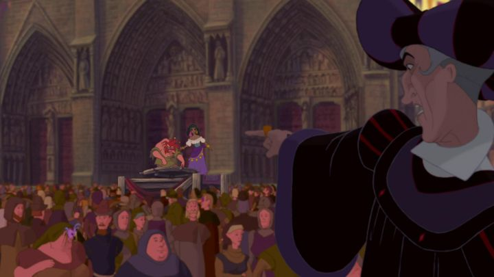

I'll be frank: I didn't like Disney's 1996 movie "The Hunchback of Notre Dame" all that much as a kid. It was fine, but I didn't like the setting of medieval France, of dancing gypsies and barefoot peasants and stinky cheese. But I rediscovered it years later, and found a whole new apprieciation for it as an adult. In fact, a lot of elements feel more suitable for adults, even though it's still within the realm of family entertainment. Based on the Victor Hugo novel (a classic writer whose works tended to be dark, including the original "Hunchback" story), the movie is set in Paris, centered around Quasimodo. The Judge of the city, Claude Frollo, is on a career-long mission to rid Paris of gypsies, who had an unjust reputation for crime and illegal immigration. Quasimodo was a child of one fleeing gypsy, and when Frollo kills the mother during a chase, he's horrified by Quasi's mis-shappen appearance. But a nearby priest condemns Frollo's actions, and feeling guilty, he agrees to let Quasi live, as long as he can be kept in the bell tower of the Church of Notre Dame. Ever since, Frollo pays regular visits to the hunchback as a father figure, but educates him to never leave the tower, for the world is a cruel place that won't accept his ugly form.Quasimodo longs to go outside however, and after years of trying to ignore his loneliness, he goes out in secret to enjoy "The Festival of Fools" just outside the Church's walls. He learns the joy, but also cruelty, of those outside, and also kindness, however rare. One of the few to show kindness is Esmeralda, a beautiful dark-skinned gypsy dancer, and for a moment, Quasimodo even entertains the possibility of love thanks to her. Her beauty seems to rapture everyone, including Frollo, and he quickens his raid on gypsies to find her, either to force her to be his or to burn her at the stake. And she also charms Cpatain Pheobus, a soldier knight that returns to serve under Frollo, but increasingly grows disgusted with his boss' actions. Watching closely, some of the themes that come up include: intolerance (Quasimodo is hated for his appearance), racism (against the gypsies for being outsiders, almost all of whom are dark-skinned), sexual assult (Frollo briefly smells Esmeralda's hair and she catches on quickly, not to mention him using his position of power to threaten her), religon and sin (the Church has a central presence in the movie), workplace harrassment (Pheobus is threatened to do increasingly cruel and illegal things under orders of Frollo), and probably more that I'm missing. As a kid, I just saw the intolerance one, and applied it generically to all the victims in the movie. These are pretty serious themes, and seem even more relevant 20 years after the movie was made. And it's because of these serious stakes that the plot has greater merit.A lot of those themes hinge on the presence of Esmeralda. I think of Disney as one of the more forward-representing studios in terms of diversity, but I'm quick to forget that before "Notre Dame" and "Pocahontas," virtually all human characters in Disney movies were white. Esmeralda is a refreshingly strong female character, even though it's frustrating to see that literally every human character falls in love for her beauty. She's a dancer to boot, giving quite the performance during the festival, and her large expressive eyes come off as flirtatious when alone with Quasimodo. Kids might not think much of it, but this is the only major time I can think of a character being remotely sexualized in a Disney cartoon, even if it was important for the story and Frollo's motivations.  I even liked Pheobus' character, played by Kevin Kline. I tend to like snarky heroes like him, even though some viewers might disagree. Even if his major role in the story is primarily to be the final love for Esmeralda, breaking Quasimodo's heart, I think it was a good development to remind him the difference between kindness and love, and it felt better to give him a happy ending, not with romance, but with the town's acceptance of him as a hero. But even more powerful that the story are the songs that portray it. They hold up beautifully, and I'd love to see a stage production of the songs (apparently, there was a short-lived stage adaptation, but it didn't expand like "The Lion King," "Beauty and the Beast" or "Aladdin" did). "The Bells of Notre Dame," sung by Clopin, a jester-looking gypsy that narrates the tale and serves as a comic-relief side-character, is one of the most powerful and emotional openings of any Disney film (which is saying a lot, as they've repeated this style in later movies). Quasimodo is given the most wonderful singing voice, perhaps to offset his appearance, and he gets multiple solo songs, including the excellent "Out There." And Frollo's acknowledgement of his sinful desires in the song "Hellfire" has become an online cult favorite. Some of the songs are breathtaking showstoppers, some are clearly child-entertaining sing-a-longs, and some are much quieter and somber, including a song by Esmeralda in the Church. While other Disney musicals might be more meaningful, I don't think there has ever been a collection of songs more impactful. The cinematic production values are also an impressive feat in hindsight. The Notre Dame cathedral is a majestic sight, and there are multiple 3D pans of Quasimodo climbing and sliding down the outside of the church. Those shots are some of the best I've ever seen in animation. Unfortunately, I didn't notice as a kid on my VHS that the large crowds typically use CGI background characters to fill the space, something that was slowly becoming more commonplace, but I admit this makes the pagentry feel larger and more alive. And Quasimodo's character design was a tough balance that I think they've nailed, making him clearly look deformed, but not so ugly that viewers couldn't stand him. Overall, this was Disney's best and most extravagant-looking movie yet, and they've never truly topped it since.If there were any flaws to mention, I'd say it was the movie's tendency to stop and talk down to the children in the audience with spectacle to ensure they didn't fall asleep. Frankly, it wasn't necessary, and even as a child, I didn't appreciate it. This is most obvious with the three gargoyles that act as mascots and comic relief to Quasi alone in the bell tower. Cleverly named Victor, Hugo and Laverne, they only seem to come alive when alone with Quasi, and it had potential. But of course, they bicker at each other and throw out modern and crude jokes about farting and kissing. The movie would have been better if they were cut down considerably, or even cut out all together. It's a shame there are issues like that to prevent one of Disney's best films from perfection. And of course, purests of the original novel will balk at differences, including the ending, even though I like the Disney version better. Even so, I was mesmerized as an adult to how strong "The Hunchback of Notre Dame" is as as theatrical musical. If you haven't seen it recently, or missed out completely, it's the one movie I insist you return to.
- "Ani" More reviews can be found at : https://2danicritic.github.io/ Previous review: review_The_House_of_the_Lost_on_the_Cape Next review: review_The_Illusionist